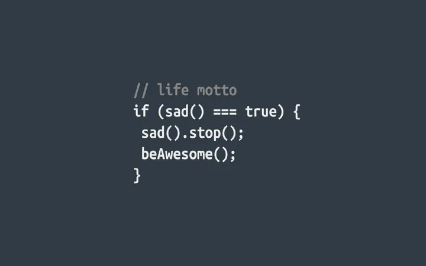
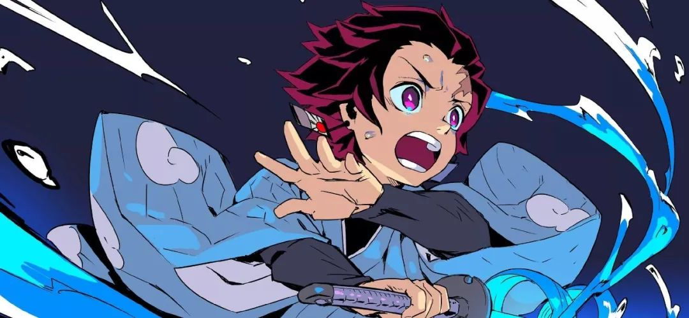

我的个人爱好
羽毛球是我的爱好之一。这项运动不仅可以锻炼身体，还可以提高反应速度和手眼协调能力。每次打球时，我都会感到身心愉悦。这是一项需要技巧和耐力的运动，需要不断地练习和挑战自己。在这个过程中，我学会了如何保持冷静，在压力下保持专注，如何与队友合作和协调。这些技能和经验不仅可以应用于运动中，还可以在我日常生活和学习中发挥作用。
而Python和JavaScript则是我近年来开始学习的编程语言。这些编程语言不仅有着广泛的应用领域，还可以帮助我更好地理解计算机科学和技术。我很享受编写代码的过程，不断地尝试新的方法和技术来实现不同的功能。这些编程技能也让我在学习和工作中有了更多的可能性和机会。
除此之外外，我还非常喜欢动漫。动漫是我青春时期的回忆，也是我生活中不可或缺的一部分。它们可以带给我欢笑和感动，让我忘却烦恼，享受生活的美好。我喜欢看各种类型的动漫，从热血到治愈，从冒险到悬疑，都能够让我沉浸在其中。动漫不仅是一种娱乐，更是一种文化和艺术，它们可以让我看到不同的世界和人生。
当然，我的爱好并不仅限于这些。我还喜欢阅读、旅行和学习新的技能和知识。这些爱好让我感到生活充满了乐趣和意义。它们让我不断地探索和挑战自己，也让我更加热爱生命和珍惜每一个时刻。
我的梦想是考研上岸，在未来的日子里，我会努力学习和提高自己的能力，为实现这个梦想而不断努力。我相信，只要我不断地学习和进步，就一定能够达到自己的目标。
这个世界上有太多的人追求着同样的梦想，但只有那些努力不懈、不断进取的人才能够实现自己的梦想。在这个过程中，我们需要保持冷静和理智，不断学习和提高自己的技能和能力。只有这样，我们才能够在激烈的竞争中脱颖而出，实现自己的人生价值。
在这个充满机遇和挑战的时代里，我们需要保持自己的热情和激情，不断地追求自己的目标和梦想。只有这样，我们才能够在生命的旅程中留下属于自己的精彩和美好。